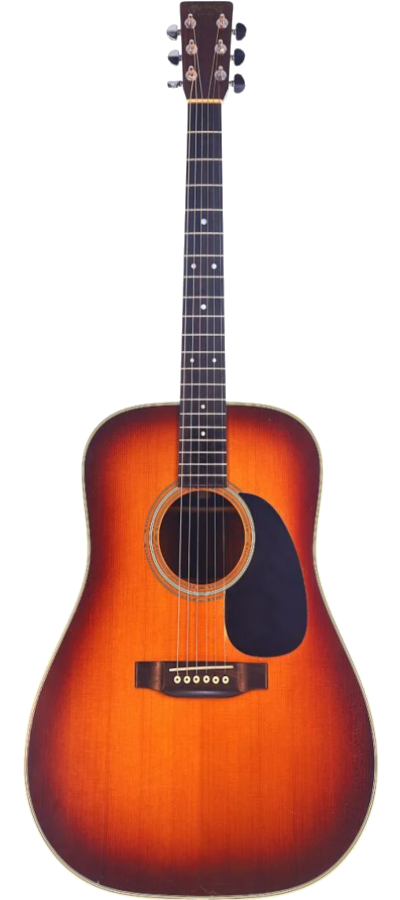

Guitarra Acústica CAROLINA - A34

Descripción
La CAROLINA A34 es una guitarra acústica diseñada para conseguir un sonido definido y brillante. Su construcción ofrece una respuesta cómoda al tocar.
Es adecuada para acompañamiento, práctica y composición, siendo una opción versátil para diferentes situaciones.
Características
| Características | Especificación |
|---|---|
| Modelo | A34 |
| Tipo | Guitarra Acústica |
| Color | Sunburst |